01 / GENERATIVE STUDIO
ONVISUAL
Генеративная студия: коммерческие проекты, шоурил, кейсы, продукты, продажи и лидогенерация.
База знаний, проекты, продажи и команда в одном месте.
Генеративная студия: коммерческие проекты, шоурил, кейсы, продукты, продажи и лидогенерация.

Развитие детского IP: миры, герои, соцсети, контент, стратегия и рост аудитории.
Кто мы, что создаём и как себя презентуем.
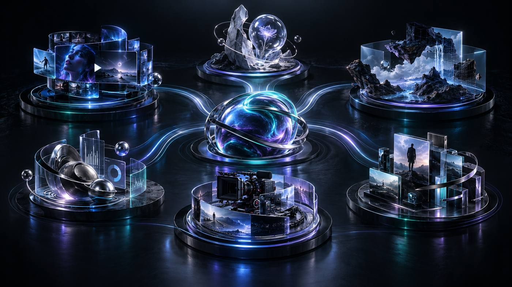
ONVISUAL — AI-продакшн полного цикла для брендов и агентств. Команда создаёт рекламные фильмы от идеи и режиссуры до финального кадра. AI используется как инструмент производства, снимающий физические ограничения без потери качества.
Главная подборка работ студии
Открыть ↗ PROJECTSРаботы, собранные под клиентские проекты
Открыть папку ↗3 пакета материалов для продаж и презентации проектов
Примеры работ для показа компаниям
Открыть ↗ WELCOMEВводный материал о студии
Открыть ↗Добавим отдельным блоком, когда пришлёшь материалы
Ожидает материалов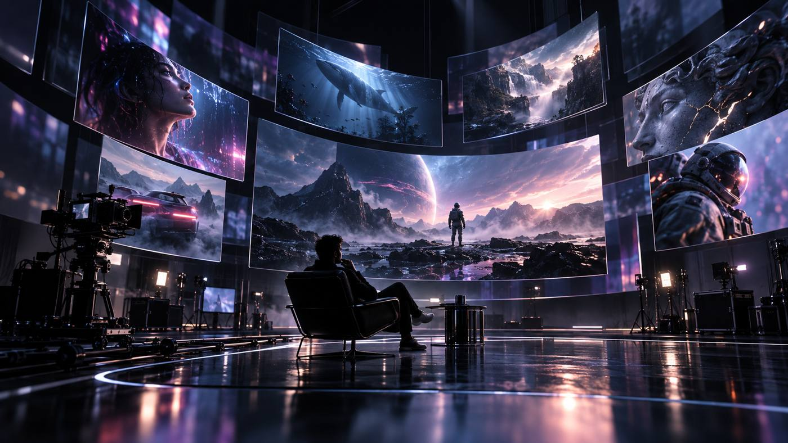
Главная подборка работ студии — первый материал для знакомства с визуальным уровнем и диапазоном ONVISUAL.
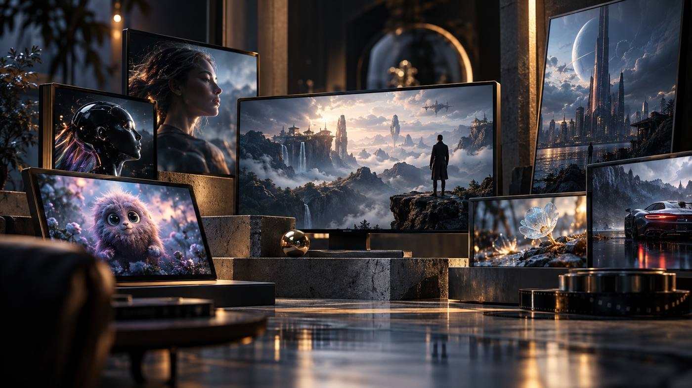
Финальные работы, собранные под реальные проекты.
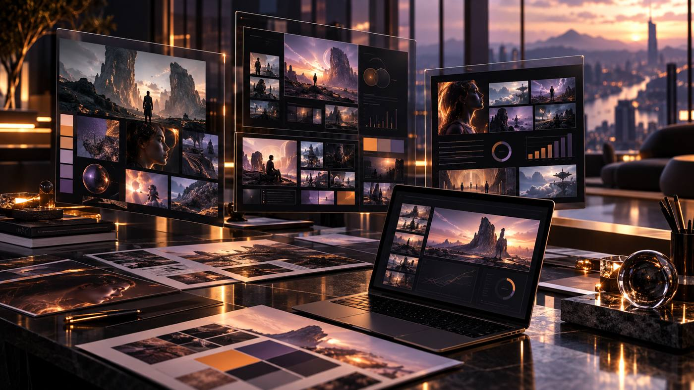
Презентационные материалы для продажи услуг и демонстрации подхода.
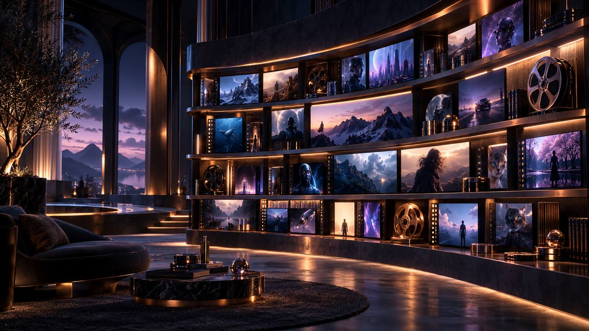
Подборка примеров, которую можно использовать в коммуникации с брендами и потенциальными клиентами.
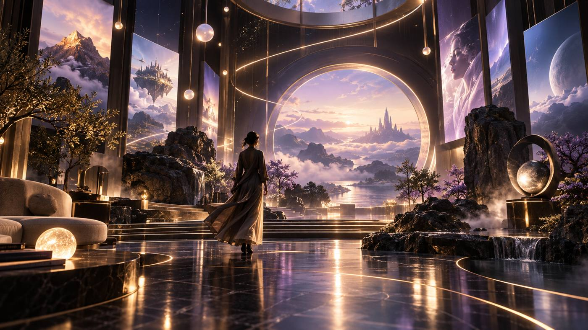
Быстрый вводный материал о студии: кто мы, как работаем и как презентуем ONVISUAL.
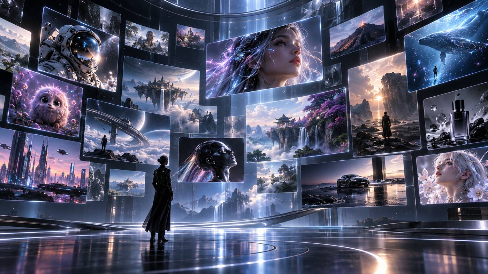
Рекламные ролики для digital и кампаний. CGI, AI или съёмка — под задачу.
Видео для презентаций, сайтов и офисов продаж.
Материалы под запуск продукта или проекта, серии видео и адаптации.
Видео для обучения, HR и внутренних задач.
Серии роликов, вертикальные видео и регулярный контент.
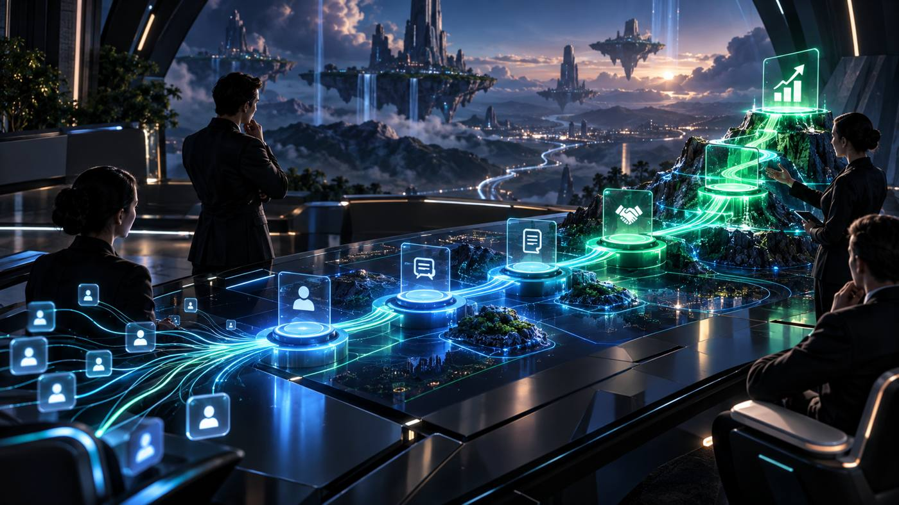
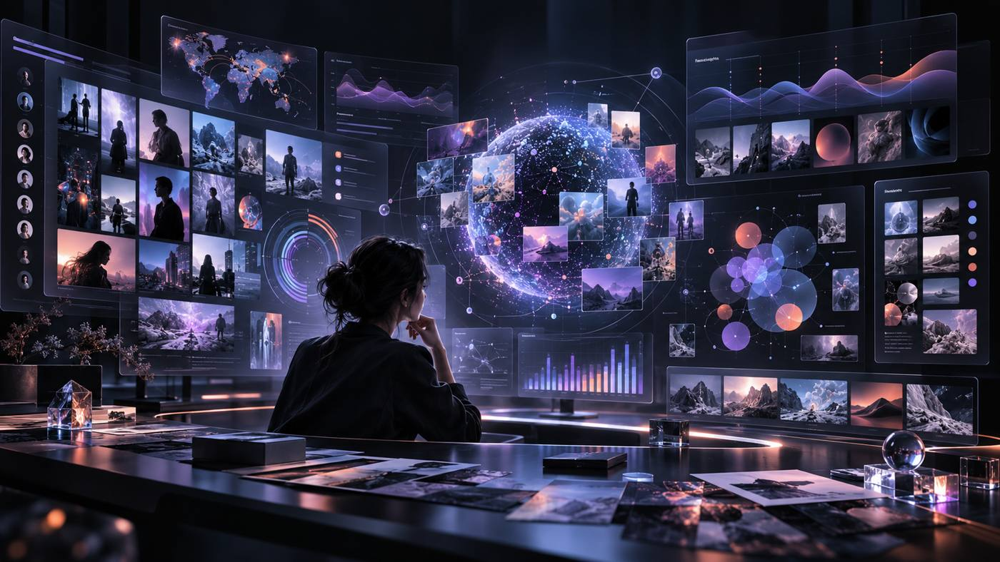
Кастдевы, рынок, аудитория, конкуренты и сигналы, которые помогают точнее упаковывать ONVISUAL и заходить к клиентам.
Что влияет на выбор продакшена и как клиенты принимают решение.
Маркетинг / координация подрядчиков
Маркетинг / координация подрядчиков
Инсайты, которые должны влиять на упаковку, продажи и коммуникацию.
Клиенты оценивают не только картинку, но и скорость ответа, ясность и предсказуемость работы.
Отраслевой или близкий по задаче кейс сильно влияет на shortlist и финальное согласование.
Клиенту удобнее одна команда, которая закрывает сценарий, визуал, AI-видео и финальный production.
Тестовое или очень релевантный пример помогает новому подрядчику пройти первый фильтр.
Ценность считывается через креатив, системность, качество и понимание бизнес-задачи, а не через сам факт использования AI.
Материалы должны быть такими, чтобы их можно было быстро переслать руководителю и обосновать бюджет.
Сегменты, критерии выбора и роли ЛПР собираются из кастдевов и лидогенерации.
Практики, инструменты и изменения рынка, которые влияют на предложение ONVISUAL.
Кто конкурирует напрямую, кто задаёт benchmark, а кто заменяет production технологией.
Карта рынка: кто конкурирует напрямую, кто задаёт benchmark по качеству, а кто является технологической альтернативой.
СИНТЕЗ 25, SLOI AI, Neuro Twin Studio, HYPE AI, Росвидео
Конкурируют за те же задачи: AI-реклама, брендовые ролики, генеративный production.Stereotactic, Red Pepper Film, Hype Production
Benchmark по режиссуре, storytelling, cinematography и доверию крупных брендов.Mosaic Media, Monks
Берут клиента шире: стратегия, media, SMM, technology и production в одной системе.B-Reel, North Six
Сильны в digital experiences, fashion/luxury craft, talent и международном production.Runway, Luma AI, Stability AI
Не продают production под ключ, но снижают барьер входа для агентств и in-house команд.Союзмультфильм
Скорее benchmark для Мультвселенной: персонажи, сериальность, франшиза и дистрибуция.Документы и инструкции, которые нужны команде как рабочая база.
Справочный сценарий проведения кастдева: цель исследования, кого приглашать, правила созвона, вопросы для новых компаний и прошлых клиентов, логика MVP и что фиксировать после интервью.
Компании, сигналы, оценка приоритета, Telegram-комьюнити, конкурсы и офлайн-нетворкинг.
Одна из первых попыток выхода на рынок: рассылка по агентствам с последующими звонками и предложением личной встречи.
В Hub показываем структуру, приоритеты и статусы. Телефоны, e-mail и персональные контакты остаются в исходной таблице.
0 — нет данных и признаков бюджета
3 — средний бизнес / периодические кампании
5 — крупный подтверждённый рекламодатель, тендер или значимый медиабюджет
0 — нет событий 24+ месяцев
3 — расширение, новая категория или найм
5 — свежий тендер, крупный запуск, смена креативного руководства или масштабная трансформация
0 — видео не используется
3 — кампейн-видео без доказанного платного 16:9
5 — подтверждены ТВ, кино, DOOH/экраны либо тендер на видеопроизводство
0 — не подходит
3 — подходит для части задач
5 — идеальная категория и задача для языка ONVISUAL
Отдельный канал лидогенерации: отслеживаем тендеры, оцениваем целесообразность участия, собираем требования и готовим коммерческое предложение под конкретную закупку или запрос.
Рабочий реестр участия и статусов.
Предыдущие КП для повторного использования и анализа.
Чтобы видеть, какие предложения, форматы и подходы уже тестировались.
AI-native кино • Казахстан
AI films / animation / ads • Тайвань
AI Film & Music • США
Film / Music Video / Games
AI cinema / advertising
Narrative / VFX / Animation
Конференции, маркетинговые мероприятия, рекламные фестивали, AI / production события, деловые клубы.
Рассматривали онлайн- и офлайн-формат, в итоге покупали вход и посещали мероприятие офлайн. Сохраняем как релевантное событие для насмотренности, контактов с агентствами и брендами и отслеживания сильных креативных кейсов.
Локальные бизнес-события, маркетинговые конференции, нетворкинг и встречи с брендами региона.
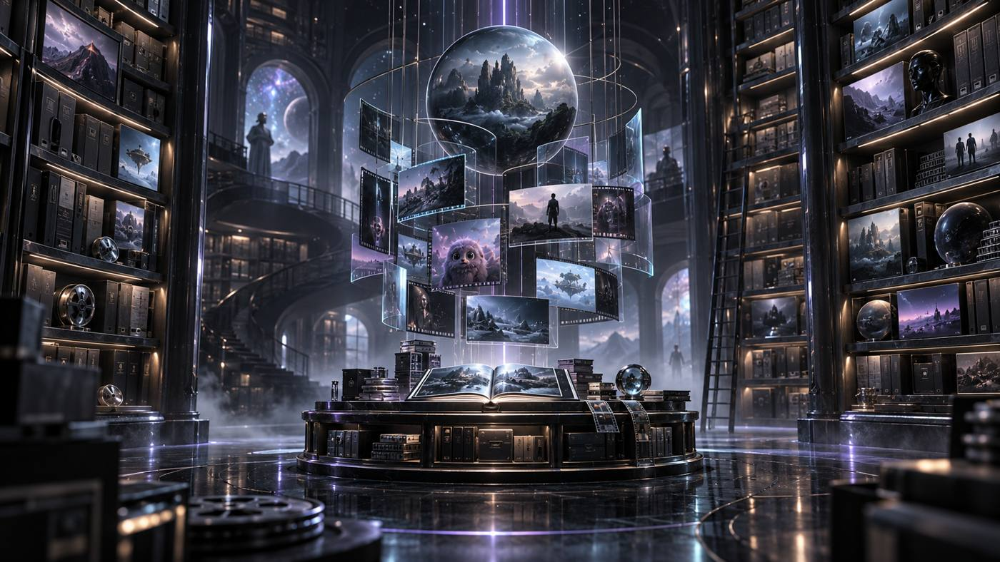
База компаний, контактов и статусов.
| Компания | Индустрия | Контакт | Статус | Следующее действие | Ответственный |
|---|---|---|---|---|---|
| Данные будут добавлены | |||||
Система развития детского IP: миры, герои, контент и стратегия.
Мультвселенная объединяет разные оригинальные миры и персонажей. Каждый мир развивается как отдельное IP, но команда, процессы, контент и стратегические задачи могут пересекаться.
Три ключевых IP, которые остаются основой Мультвселенной.

Основной мир • Монстр Zip сейчас в работе

Основной мир • в работе

Основной мир • в работе
Здесь хранятся сгенерированные кадры, сценарии, видео, монтажные материалы и готовые ролики по мирам.
Миры и концепции, по которым сейчас идёт активная работа.
Концепции, которые уже проходят более глубокую проработку.
Идеи, которые сохраняем в пуле и можем возвращать в тестирование позже.
Один стандарт для всех текущих и будущих IP.
Названия и статусы миров перенесены из рабочей структуры папок: «В работе», «Разработка», «На перспективу».
Открыть исходную папку миров ↗Все собственные площадки в одном месте — для публикаций, проверки роста и сравнения форматов.
Мультвселенная создаёт, проверяет и масштабирует оригинальные детские миры, превращая сильнейшие из них в самостоятельные франшизы.
Подтверждённый ведущий мир, резерв перспективных направлений, регулярное производство, возвращающаяся аудитория, защищённые права и первые повторяемые источники выручки.
Несколько развивающихся франшиз, собственная система запуска новых миров, продуктовые и лицензионные направления, международная дистрибуция и стратегические партнёрства.
Цифровые данные как основа отбора и масштабирования.
Ясная форма и повторяемая механика важнее визуальной сложности.
Контент должен работать и для ребёнка, и для родителя.
Продвижение шире ленты: автор, музыка, визуальная комедия.
Мир должен предполагать действие, выбор и участие.
На платформы приходим не с идеей, а с доказанным продуктом.
Общая инфраструктура сильнее одиночного проекта.
Несколько миров → мультиформатные пилоты → данные платформ и исследования семей → выбор ведущего IP → регулярный сериал и каталог → музыка и интерактив → локализация → онлайн-кинотеатры и телевидение → лицензирование и международное масштабирование.
Источник постоянно обновляется: просмотры, реакции, комментарии и результаты публикаций по собственным каналам.
Рабочая таблица команды. Используем её как источник фактических результатов, а не переносим цифры вручную в Hub.
Конкуренты, каналы, контент и прямое тестирование миров на детской аудитории.
Сегменты, интересы и реакции детей
Российские и зарубежные IP
Форматы, ролики и механики роста
Рост, площадки и дистрибуция
В digital-first кейсах сильнее работает проверка песни, героя, визуального приёма или короткой механики до масштабного production.
У устойчивых IP есть повторяемая формула, которая даёт десятки сюжетов без искусственного усложнения.
Для discovery полезны Shorts, VK Clips, TikTok и Likee; длинный каталог масштабируется уже после подтверждения hook.
В базе отдельно собраны новые и растущие проекты 2025–2027, включая AI-пилоты и платформенные гранты.
Тематические compilations и long-form помогают наращивать watch time уже после накопления библиотеки.
Отдельные ролики, цитаты и короткие ситуации вокруг одного героя могут обгонять обычные эпизоды и трейлеры.
Показываем детям разные миры и визуальные концепции, собираем реакции и ответы и используем результаты как один из сигналов для решения, какие IP продолжать развивать.
Исходные концепции миров, логика и первичная визуальная разработка.
Открыть папку ↗Исследования конкурентов, каналов и форматов детского контента.
Открыть аналитику ↗Постоянно обновляемая база IP, кейсов, роликов, платформ и сигналов роста.
Открыть таблицу ↗Стратегия, цели и факт.
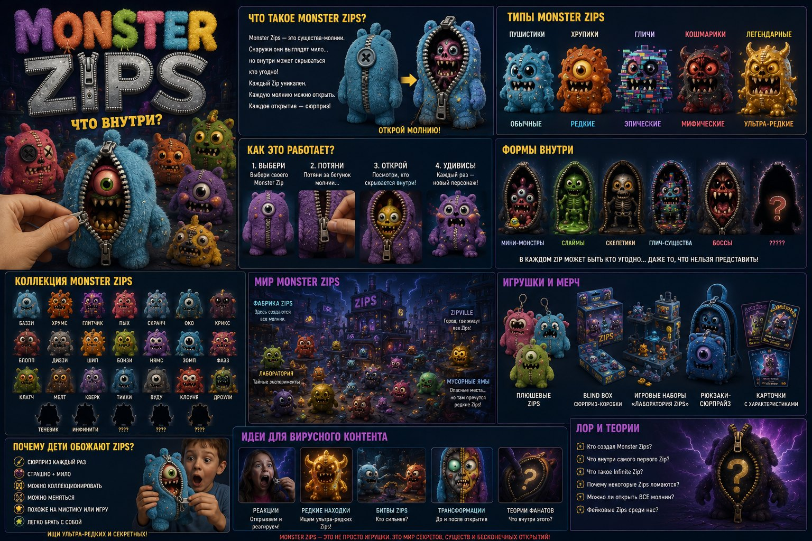
Рабочий производственный пайплайн: сценарии, генерации, видео, аудио, монтаж, правки, Final и публикация.
Старый рабочий пайплайн и сводка проекта.
Открыть источник ↗Предыдущая версия общего production-пайплайна МВ.
Открыть источник ↗Одна команда, две вселенные и пересекающиеся роли.

ONVISUAL Studio и Мультвселенная могут пересекаться по людям, продакшну и процессам.
Роли и специалисты, которые работают сразу с двумя направлениями.
ONVISUAL + МВПродакшн, продажи, креатив, кейсы и клиентские проекты.
Generative StudioIP, сценарии, миры, герои, контент и развитие аудитории.
Kids IPФото добавим позже — сейчас фиксируем роли, зоны ответственности и логику взаимодействия.
Режиссура, сценарии, генерации, монтаж и выпуск контента.
Общая доска с разделением по направлениям.
Нет задач
Нет задач
Нет задач
Нет задач
Дедлайны, встречи и релизы.
Быстрый доступ к рабочим материалам.